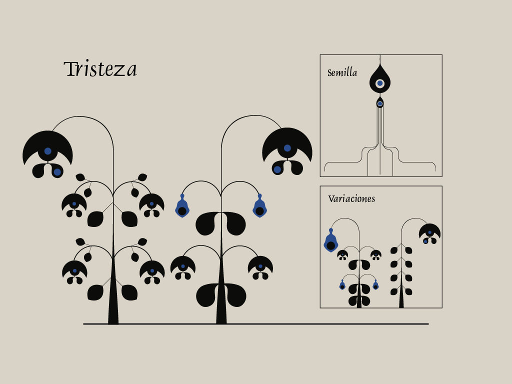
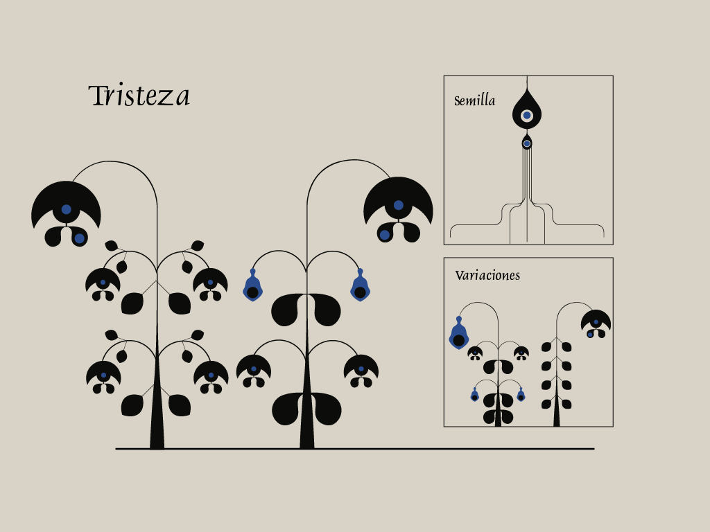

Bloomind
Un Jardín de Emociones
¿Por qué no ver las emociones como vemos a las plantas?
Algunas son fáciles de cuidar; otras requieren más tiempo y dedicación, pero todas pueden florecer. Así nació este proyecto.
¿Qué es Bloomind?
Bloomind es una plataforma que representa nuestras emociones como plantas vivas. Cada planta crece, cambia y refleja los matices de nuestras emociones.
¿Por qué?
La inspiración surge de la naturaleza, que nos enseña que todo crecimiento lleva tiempo. Queremos crear un espacio donde puedas explorar tus emociones con empatía y sin juicios.
Cronología
Concepto Inicial
Todo comenzó con la idea de representar emociones a través de elementos visuales. Nos inspiramos en cuadernos botánicos y en el simbolismo de las plantas.
Diseño de Plantas
Cada emoción fue representada con formas botánicas. La "Esperanza" es luminosa y expansiva, mientras que la "Tristeza" se pliega sobre sí misma con delicadeza.
Explora las formas botánicas
 



Desarrollo
Usamos herramientas digitales para dar vida a las plantas, logrando una interacción visual rica que responde al usuario.